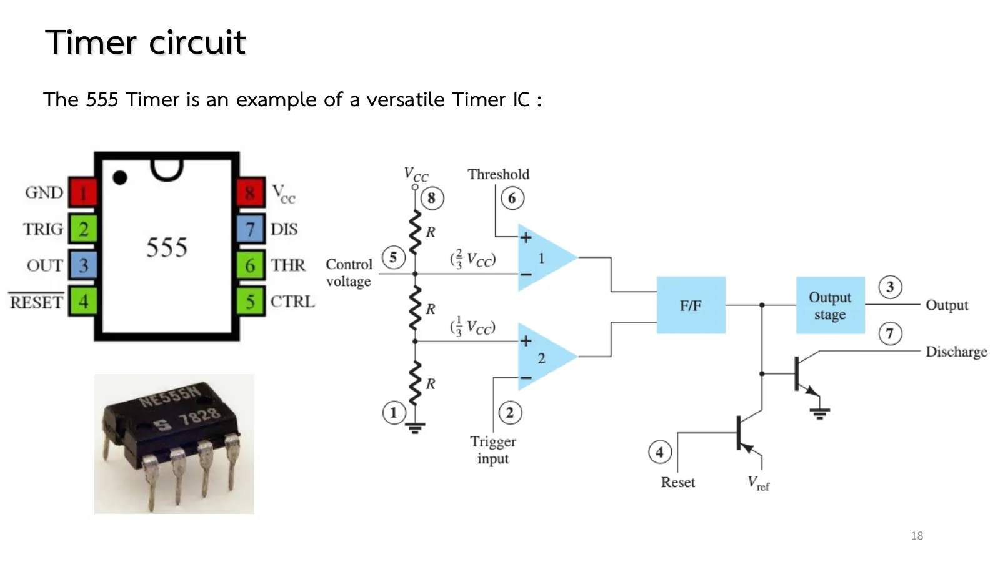
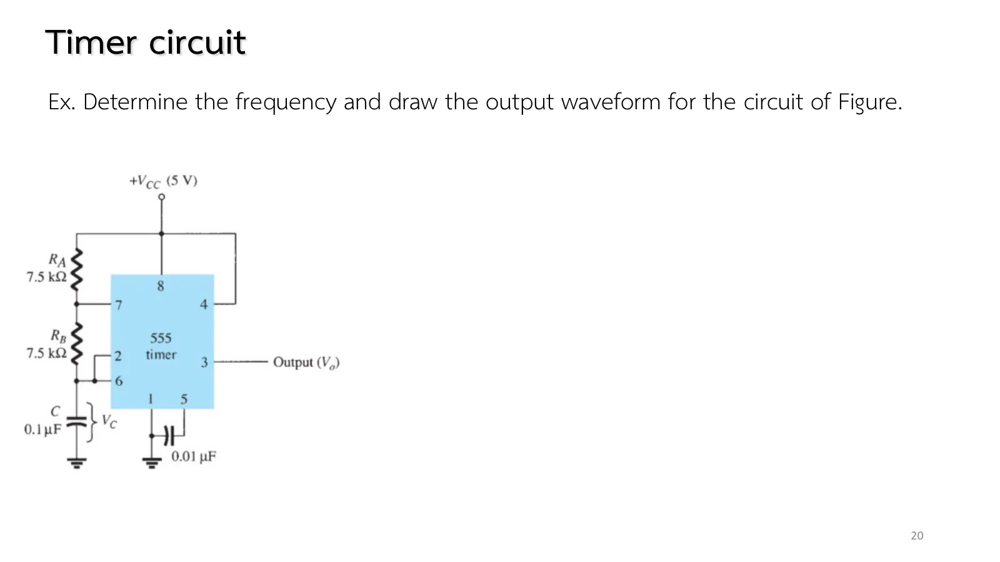

A blinking light, a warning beep, a delay before a motor starts: such timing jobs take one IC, two resistors and one capacitor. The 555 timer has been in use since the early 1970s and is one of the most produced ICs ever. This page first opens the chip (two levels, two comparators, one flip-flop), then lets it oscillate on its own as an astable and fire a single pulse as a one-shot; every waveform comes from a real time simulation (chapter 8 slides, pp. 18–22; Boylestad section 13.4).
Inside (p. 18, Fig. 13.16): three R give \(2V_{CC}/3\) and \(V_{CC}/3\); comparator 1 (pin 6, threshold, above 2V_CC/3 → reset) and 2 (pin 2, trigger, below V_CC/3 → set); the flip-flop remembers in between; the output (pin 3) and the discharge transistor (pin 7) follow the flip-flop.
Astable (pp. 19–20, Figs. 13.17–13.18, Eqs. 13.3–13.6): charging through \(R_A + R_B\): \(T_{high}\) ≅ 0.7(\(R_A + R_B\))C; discharging through \(R_B\): \(T_{low}\) ≅ 0.7\(R_B\)C (0.7 is ln 2 rounded). Example 13.1: 7.5 kΩ, 7.5 kΩ, 0.1 µF → 1.05 ms, 0.525 ms, 635 Hz. The output is always high longer than low.
Monostable (pp. 21–22, Fig. 13.19, Eq. 13.7): C starts at 0 and charges through \(R_A\) to \(2V_{CC}/3\), which takes ln 3 ≈ 1.1 time constants. Example 13.2: 0.825 ms. The pulse width does not depend on the trigger.
The simulation: the resistors, the capacitor, the discharge switch and the output source are real engine parts; the flip-flop and the comparators act between time steps. The measured values use ln 2 = 0.693 and so differ from the 0.7 formulas by about 1 %.
Slide p. 18 shows the inside of the 555: three equal resistors split \(V_{CC}\) into the levels \(2V_{CC}/3\) and \(V_{CC}/3\); two comparators watch pin 6 (threshold) and pin 2 (trigger) and command a flip-flop; the output (pin 3) and the discharge transistor (pin 7) always follow the flip-flop.
The trick lies between the two levels: while the inputs sit between \(V_{CC}/3\) and \(2V_{CC}/3\) neither comparator speaks, so the flip-flop keeps its state. That one bit of memory is what makes timing possible.

สไลด์หน้า 18: ขาและภายในของ 555 (รูป 13.16)Slide p. 18: the pins and the inside of the 555 (Fig. 13.16)
A 555 at \(V_{CC}\) = 5 V with three 5 kΩ resistors in series. Find the two comparators' reference levels, and the voltages at pin 6 (threshold) and pin 2 (trigger) that reset and set the flip-flop.
Tie pins 6 and 2 to a single capacitor (slide p. 19). C charges through \(R_A + R_B\) up to \(2V_{CC}/3\); the flip-flop is reset, the output goes low, the discharge transistor conducts, and C discharges through \(R_B\) down to \(V_{CC}/3\), where it is set again, for ever.
The 0.7 in \(T_{high} = 0.7(R_A + R_B)C\) and \(T_{low} = 0.7R_BC\) is ln 2: in each interval C covers exactly half of the remaining way to where it is heading. Since the high interval charges through more resistance, the duty cycle always exceeds 50 %.
Set \(R_A\), \(R_B\), C and \(V_{CC}\). The lower graph shows \(v_C\) (between \(V_{CC}/3\) and \(2V_{CC}/3\)) and the output \(v_o\) in time (slowed so that 4 periods take 5 s). The panel on the right compares the measured \(T_{high}\), \(T_{low}\), f with the formulas. Make \(R_A\) much smaller than \(R_B\): the duty cycle approaches 50 % but never reaches it. The switch in the box is the discharge transistor.
Slide p. 20 gives \(R_A = R_B\) = 7.5 kΩ and C = 0.1 µF at \(V_{CC}\) = 5 V. Before opening the solution, guess: which interval is longer, the high or the low one, and by how much? The answer hides in the ratio of \(R_A + R_B\) to \(R_B\).

สไลด์หน้า 20: โจทย์ Example 13.1Slide p. 20: Example 13.1
สไลด์ไม่มีเฉลย: หน้า 20 คือ Example 13.1 ของตำรา · สูตร 0.7 ของตำราคือ ln 2 = 0.693 ปัดเศษ ภาพจำลองวัดได้ 1.045 ms และ 0.526 ms (ต่างจาก 1.05/0.525 ไม่ถึง 1 %)
The slides give no solutions: p. 20 is the book's Example 13.1. The book's 0.7 is ln 2 = 0.693 rounded; the simulation measures 1.045 ms and 0.526 ms (within 1 % of 1.05/0.525).
↓ โจทย์ 2: คำนวณแล้วเทียบกับคาบที่ภาพจำลองวัดได้
↓ Problem 2: work it out and compare with the period the simulation measures
2
Example 13.1: อะสเตเบิล 7.5 kΩ, 7.5 kΩ, 0.1 µF
Example 13.1: an astable with 7.5 kΩ, 7.5 kΩ, 0.1 µF
Remove \(R_B\) and let pin 2 wait for a trigger (slide p. 21). When a negative pulse pulls pin 2 below \(V_{CC}/3\), the output goes high at once and releases C to charge through \(R_A\) from 0 V up to \(2V_{CC}/3\); then everything settles again. The pulse width is \(T_{high} = 1.1R_AC\), where 1.1 is ln 3 because C must travel two thirds of the way.
The circuit makes delays and fixed-width pulses however short the trigger is. Slide p. 22 sets the problem with \(R_A\) = 7.5 kΩ and C = 0.1 µF.
Slide p. 22 asks for the "period" of the output, but a one-shot gives a single pulse; the book answers with the pulse width \(T_{high}\) = 0.825 ms (p. 22 is Example 13.2). The book's p. 747 (Program 13.3) prints "7.15 kΩ" for 7.5 kΩ.
↓ โจทย์ 3: ภาพจำลองทริกเกอร์ทุก 3 ms วัดความกว้างพัลส์เทียบกับสูตร
↓ Problem 3: the simulation triggers every 3 ms; compare the measured pulse width with the formula
3
Example 13.2: โมโนสเตเบิล 7.5 kΩ, 0.1 µF
Example 13.2: a one-shot with 7.5 kΩ, 0.1 µF
สไลด์หน้า 21–22 · Boylestad Example 13.2 (รูป 13.19–13.20)
Slides pp. 21–22 · Boylestad Example 13.2 (Figs. 13.19–13.20)
Set \(R_A\) = 1 kΩ, \(R_B\) = 100 kΩ: \(T_{high}\) ≈ \(T_{low}\), a duty cycle of 50.2 %, the most symmetrical square wave this circuit can give.
Change \(V_{CC}\) from 5 to 15 V: the \(v_C\) waveform scales but the frequency does not change, because both the reference levels and the charging target are fractions of \(V_{CC}\). That is the 555's accuracy.
Hover over \(R_B\) during discharge: the current flows back from the capacitor through \(R_B\) into the pin 7 switch to ground.
Try this 2 — problems 1–3
Problem 1: set pin 6 = 4 V and pin 2 = 1 V at the same time: both comparators speak. In the real chip the flip-flop decides by priority (reset wins), which cannot happen in a normal circuit since pins 6 and 2 are tied together.
Problem 2: the simulation measures 636 Hz: the 1.44 formula gives 640 Hz, the 0.7 formulas 635 Hz, the exact ln 2 gives 641 Hz; they differ only in the third digit.
Problem 3: watch the trigger instant: \(v_C\) starts from 0 (not from \(V_{CC}/3\) as in the astable), which is why the factor is 1.1 time constants, not 0.7.